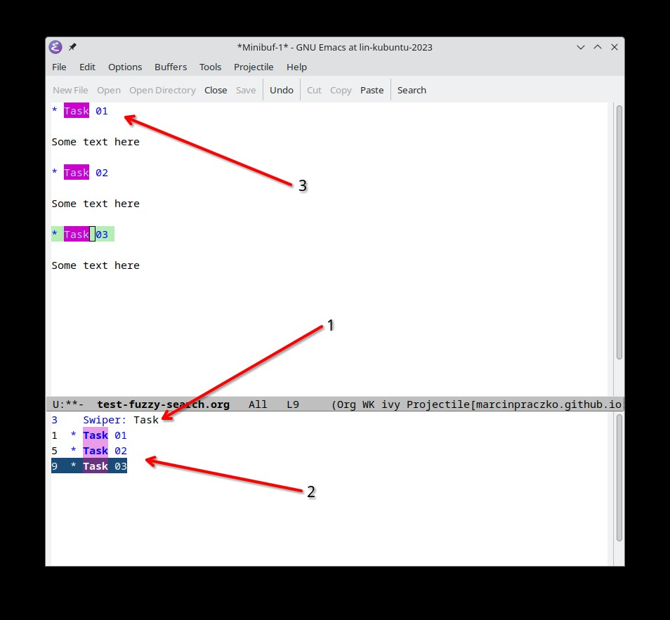

Emacs Fuzzy searching in buffer#
Introduction#
Fuzzy searching is a powerful feature that allows you to search for text in a buffer
Configuration#
To enable fuzzy searching in Emacs, you need to install the ivy and swiper package.
You can do this by running the following commands from emacs:
M-x package-install RET ivy RET
M-x package-install RET swiper RET
Please also add the following configuration to your init.el file:
(ivy-mode)
(require 'swiper)
(global-set-key (kbd "C-s") 'swiper)
Reload your configuration by running M-x eval-buffer.
After you’ve added the configuration, you can use the C-s keybinding to start a fuzzy search in the current buffer.
Screenshot#
Following screenshot shows the fuzzy search in action:
{kind=link}
In the displayed screenshot, the word Task is searched for in the buffer. Notice how the search results are highlighted in the buffer.
After pressing
C-s, the search prompt appears at the bottom of the buffer.As you type, the search results are updated in real-time.
Arrows presnets
Searching text
All items found in buffer
All recurence of the word has been selected